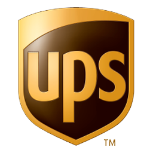
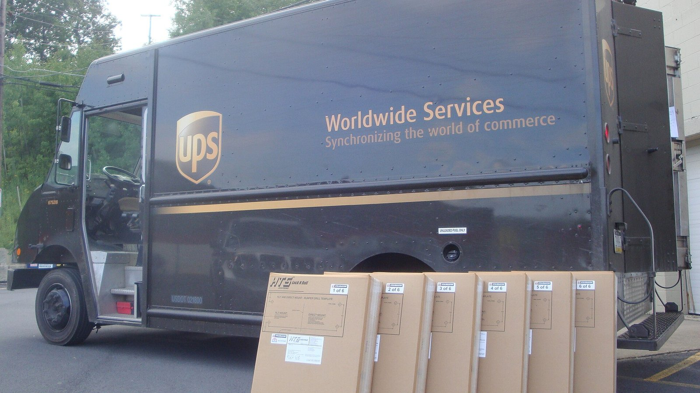
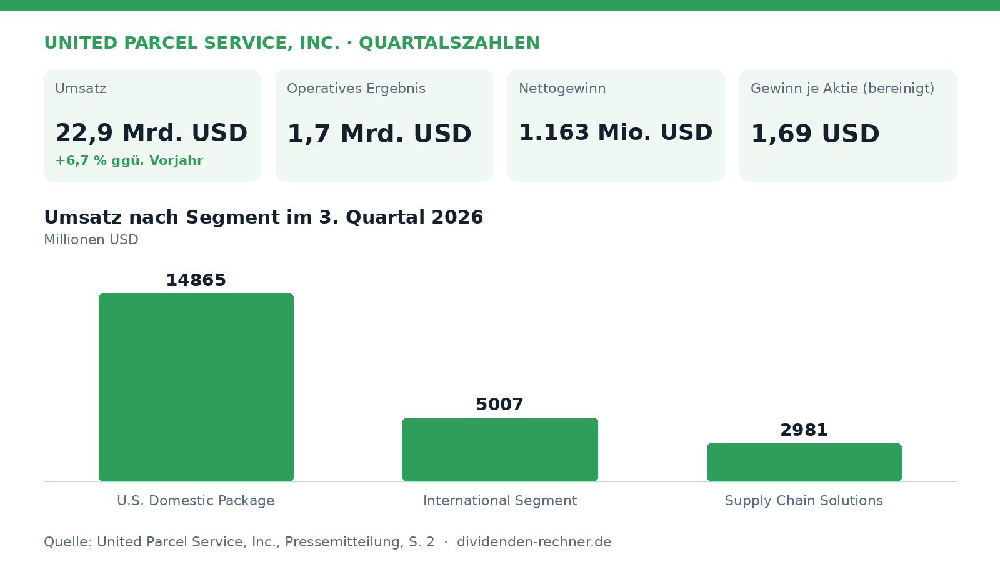
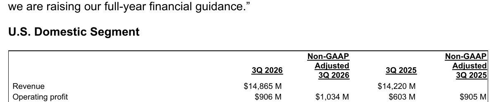
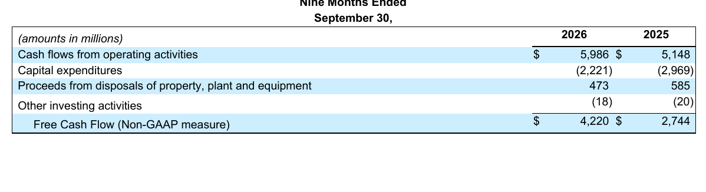

Quartalszahlen

UPS setzt 22,9 Milliarden um, Sondereffekte drücken das Ergebnis
UPS legt die Ergebnisse für das dritte Quartal 2026 vor: Der Umsatz steigt auf 22,9 Mrd. USD, während Sondereffekte das operative Ergebnis belasten.

Der Logistikkonzern United Parcel Service (UPS) hat im dritten Quartal 2026 einen Konzernumsatz von 22,9 Mrd. USD erzielt und damit den Wert des Vorjahreszeitraums um 6,7 % übertroffen. Getragen wurde das Wachstum von Zuwächsen in allen Segmenten, während Sondereffekte das GAAP-Ergebnis belasteten.

Eigene Darstellung nach Daten aus: United Parcel Service, Inc., Quartalszahlen vom 2026-10-27.Umsatzwachstum in allen Segmenten trotz Belastungen
Im dritten Quartal 2026 lag das berichtete operative Ergebnis (GAAP) bei 1,7 Mrd. USD, verglichen mit 1,8 Mrd. USD im Vorjahr. Der Nettogewinn belief sich auf 1.163 Mio. USD nach 1.311 Mio. USD im Vorjahr, was einem GAAP-Gewinn je Aktie von 1,37 USD (Vorjahr: 1,55 USD) entspricht. Bereinigt (Non-GAAP) lag das verwässerte Ergebnis je Aktie bei 1,69 USD. Belastet wurde das Quartal durch Nettocharges in Höhe von 279 Mio. USD, darunter Kosten für die Transformationsstrategie sowie eine Goodwill-Wertminderung in der Sparte Supply Chain Solutions. Das US-Inlandsgeschäft steuerte einen Umsatz von 14,87 Mrd. USD bei, das internationale Segment 5,01 Mrd. USD und Supply Chain Solutions 2,98 Mrd. USD.

U.S. Domestic Segment im 3. Quartal 2026. Quelle: United Parcel Service, Inc., Quartalszahlen vom 2026-10-27, S. 1. Ausschnitt nur zugeschnitten, sonst unverändert.„Unser drittes Quartal zeigt die anhaltende Stärkung unserer Geschäftsfundamente, angetrieben durch Premiumwachstum und größere Netzwerkeffizienz.“
— Carol Tomé, Chief Executive Officer von UPS
Neunmonats-Cashflow und Investitionen
In den ersten neun Monaten des Geschäftsjahres 2026 belief sich der operative Cashflow auf 5.986 Mio. USD nach 5.148 Mio. USD im Vorjahreszeitraum. Für Investitionen (Capex) wendete das Unternehmen in diesem Zeitraum 2.221 Mio. USD auf, während es im Vorjahr noch 2.969 Mio. USD waren. Aus diesen Mitteln errechnet sich ein Free Cashflow für die ersten neun Monate von 4.220 Mio. USD, verglichen mit 2.744 Mio. USD im entsprechenden Vorjahreszeitraum. Die Reduzierung der Investitionsausgaben trug maßgeblich zu dieser Steigerung bei.

Überleitung des Free Cash Flow (Neun Monate). Quelle: United Parcel Service, Inc., Quartalszahlen vom 2026-10-27, S. 15. Ausschnitt nur zugeschnitten, sonst unverändert.Ausblick auf das Gesamtjahr 2026
Für das gesamte Geschäftsjahr 2026 hebt das Management die Prognose an und rechnet nun mit einem konsolidierten Umsatz von rund 92,6 Mrd. USD. Beim bereinigten operativen Gewinn wird ein Wert von etwa 8,75 Mrd. USD angestrebt, während der bereinigte freie Cashflow bei rund 6,1 Mrd. USD liegen soll. Kritisch zu betrachten bleiben jedoch die anhaltenden Restrukturierungskosten im Zuge der Transformation und veränderte Nachfragestrukturen nach dem Auslaufen von Volumenanpassungen beim größten Kunden.
Die wichtigsten Zahlen im Überblick
| Kennzahl | Wert | Veränderung zum Vorjahr | Quelle |
|---|---|---|---|
| Umsatz | 22,9 Mrd. USD | +6,7 % | S. 1 |
| Operatives Ergebnis | 1,7 Mrd. USD | – | S. 1 |
| Nettogewinn | 1.163 Mio. USD | – | S. 9 |
| Gewinn je Aktie (bereinigt) | 1,69 USD | – | S. 1 |
| Free Cashflow | 4.220 Mio. USD | – | S. 15 |
Cashflow und Bilanz im Vergleich
| Kennzahl | Aktuell | Vorjahr / Vorjahr | Veränderung |
|---|---|---|---|
| Operativer Cashflow, 9 Monate | 5.986 Mio. USD | 5.148 Mio. USD | +16,3 % |
| Investitionen (Capex) | 2.221 Mio. USD | 2.969 Mio. USD | −25,2 % |
| Free Cashflow (berechnet) | 3.765 Mio. USD | 2.179 Mio. USD | +72,8 % |
Cashflow: Zeitraum seit Jahresbeginn, Vergleich mit dem Vorjahreszeitraum. Bilanz: Vergleich mit dem angegebenen Stichtag. Free Cashflow und Nettoverschuldung eigene Berechnung aus Angaben des Berichts.
Quelle: United Parcel Service, Inc., Quartalszahlen vom 2026-10-27. Rechenwege eigene Berechnung. Keine Anlageberatung.
Hinweis: Dieser Text dient der allgemeinen Information und ist weder Anlage-, Steuer- noch Rechtsberatung. Kapitalanlagen sind mit Risiken verbunden, bis hin zum Totalverlust.